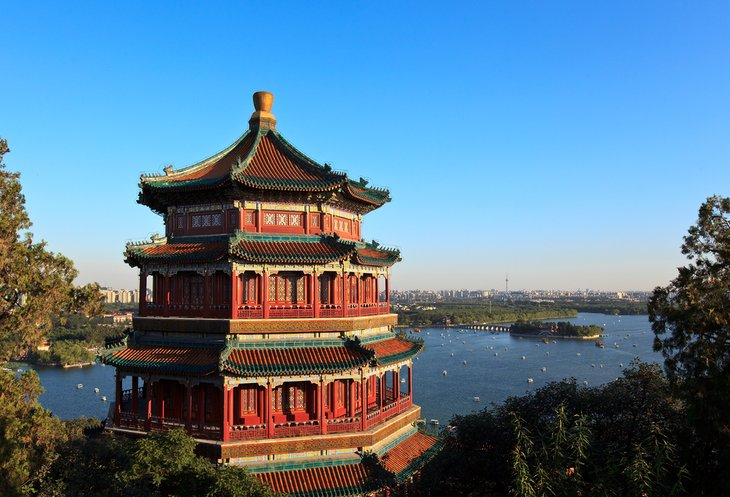

Great Wall of China
The magnificent Great Wall of China known in Chinese as 'Changcheng', or the 'Long Wall' stretches more than 6,000 kilometers from the fortresses of Shanhaiguan in the east all the way to Jiayuguan in the west, passing through Hebei, Tientsin, Beijing where the best preserved sections of the wall can be visited Inner Mongolia, Ningxia, and Gansu. Averaging six to eight meters in height but rising as high as 16 meters and wide enough in places for five horses or 10 men to pass the wall boasts numerous battlements and watchtowers. Some of the wall's oldest fortifications date back as far as the 7th century BC, with the best-known areas added around 210 BC when its various sections were joined together.
The Forbidden City & the Imperial Palace
China's largest and most important building, the Forbidden City (Zǐjìnchéng) also known as the Imperial Palace is situated in the very heart of Beijing and is a must-see when visiting the country. Started during the Yuan Dynasty between 1271-1368, much of the complex seen today was built between 1406 and 1420. This sprawling complex was the residence of 24 Ming and Qing Emperors, whose presence forbade the entry of anyone other than the imperial family and their courtesans. Covering some 720,000 square meters and protected by a 10-meter-high wall with watchtowers and a wide moat, this massive complex consists of areas set aside for ceremonial and administrative purposes, as well as a private residence used by the emperor.
The Summer Palace

An easy 15-kilometer commute from Beijing, the sumptuous Imperial Summer Palace (Yíhé Yuán) is set amid more than 700 acres of beautiful parkland and is one of China's most visited attractions. While the palace itself was built in 1153, its large lake was added in the 14th century to enhance the Imperial Gardens. Highlights include the magnificent Hall of Benevolence and Longevity (Renshou Dian), with its throne; and the beautiful Great Theatre, a private three-story structure built in 1891 to satisfy the imperial family's love of opera. This historic venue is still used for performances of traditional Chinese plays and musical events, and is worth a visit for a performance or show.